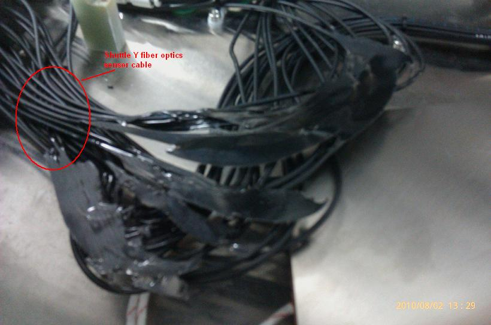
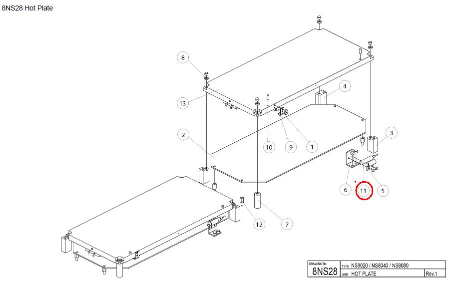
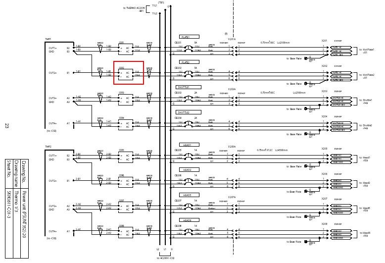

Service History
Subject: NS-8080 encountered:
1)Temperature error on Hotplate2
2) SSR faulty
3) fiber cable melted
Handler Model: NS-8080 (NS88-4, S/N: 181655) 8 Hands High UPH
Controller: RC520
Date: 2 Aug 2010
Symptom
EEMS NS-8080 - 8 Hands handler encounter temperature error on hot plate 2, when they attend to the issue found that temperature already raise up to 185 DegC, power off handler also take out the hot plate and try resit the thermocouple connector, try power up and troubleshoot but during handler homing encounter input shuttle floating error, checked on input shuttle no device and found that the input shuttle 1 & 2 all sensor reading consistent low (always sense), checking the input signals are weak also found that the fiber optics(fiber) cable is come from hot plate 2 bottom, tried to checked and find out the fiber optics cable on hot plate 2 bottom already melted.
When I tried to heat up the temperature, hotplate 2 unable to heat up. After troubleshooting found that thermo fuse already blown and the Solid State Relay SSR does not have resistance at the output as compared to others SSR. When power on, the shuttle amplifers were all reading consistently low and after sometime, the amplifers will sudden power off.
|
 |
|
 |

Will raise warranty for the Shuttle Y fiber optics cable (S0440), SSR (S0439) and the thermo fuse (S0438).